Featured projects
Quarto Wizard
Quarto Wizard is a Visual Studio Code extension that assists you in managing Quarto projects.

Quarto Extensions
A listing of
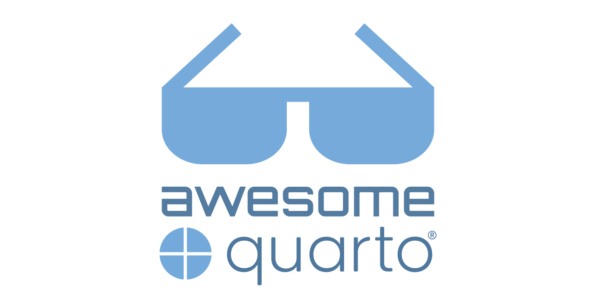
Awesome Quarto
A curated list of Quarto talks, tools, examples & articles!
Quarto Wizard
Quarto Wizard is a Visual Studio Code extension that assists you in managing Quarto projects.
Quarto Extensions
A listing of
Awesome Quarto
A curated list of Quarto talks, tools, examples & articles!
-
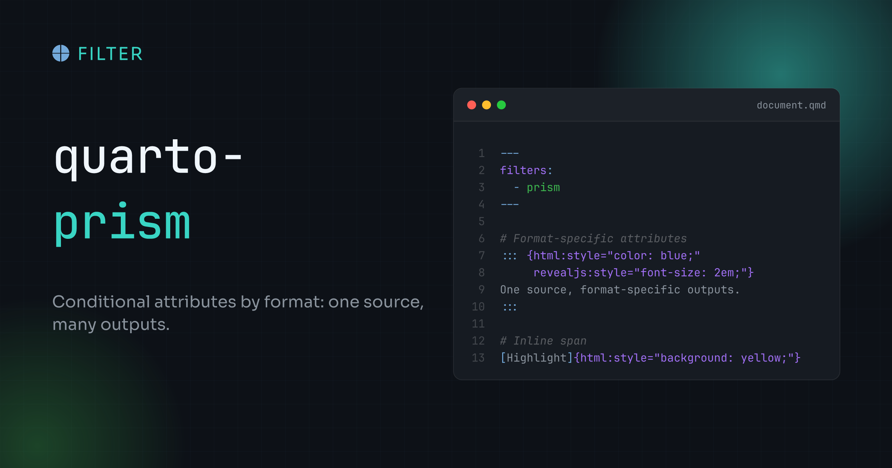
CreatedPrism
A Quarto filter extension that attaches format-specific values to a single Div, Span, or CodeBlock and lets each output format pick its own.
QuartoExtensionFilterConditionalHTMLReveal.jsTypst -
 Created
CreatedCode Annotation Fragments
A Reveal.js plugin that enables fragment-based keyboard navigation through code annotations in Quarto presentations.
QuartoExtensionReveal.jsCodeAnnotationsFragments -
 Created
CreatedCascade
A Quarto extension that automatically repeats the heading chain when new Reveal.js slides are created with
---, following the DRY principle.QuartoExtensionReveal.jsHeadings -
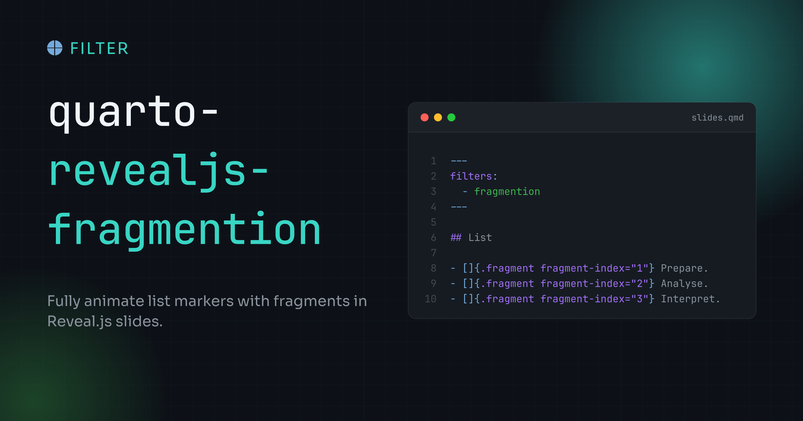
CreatedFragmention
A Quarto filter extension that hoists
.fragmentattributes from empty marker spans to their parent list items in Reveal.js presentations, so bullets and numbers appear together with their content.QuartoExtensionReveal.jsFragmentsLists -
 Created
CreatedA11y
A Quarto Reveal.js plugin providing accessibility enhancements: skip navigation, focus indicators, reduced motion, high contrast mode, font and text-spacing controls, colour overlays, ARIA slide landmarks, and screen reader announcements.
QuartoExtensionReveal.jsAccessibilityA11y -
 Created
CreatedTypst Render
A Quarto filter extension that compiles Typst code blocks and inline expressions to images (PNG, SVG, PDF) using the Typst binary bundled with Quarto, making Typst output usable across all formats.
QuartoExtensionTypstFilter -
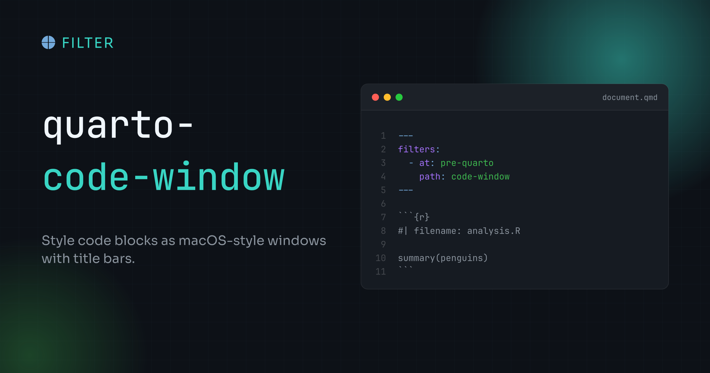
CreatedCode Window
A Quarto extension that adds window-style decorations (macOS traffic lights, Windows title bar buttons, or plain filename bars) to code blocks in HTML, Reveal.js, and Typst outputs.
QuartoExtensionCodeHTMLReveal.jsTypst -
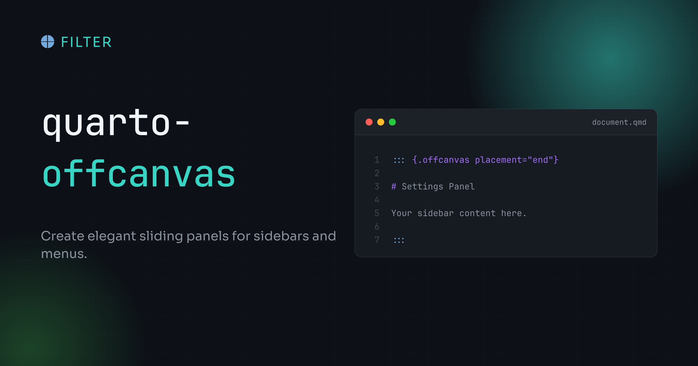
CreatedOffcanvas
A Quarto extension providing a simple way to create Bootstrap 5 offcanvas sliding panels in HTML documents.
QuartoExtensionBootstrapOffcanvasHTML -
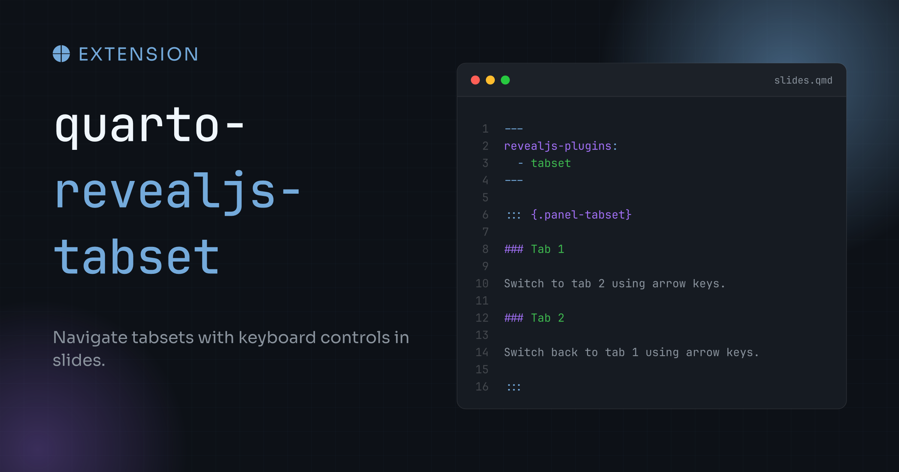
CreatedTabset
Quarto extension enabling proper tabset navigation with keyboard controls and PDF export support for Reveal.js presentations
QuartoExtensionReveal.jsTabsetNavigation -
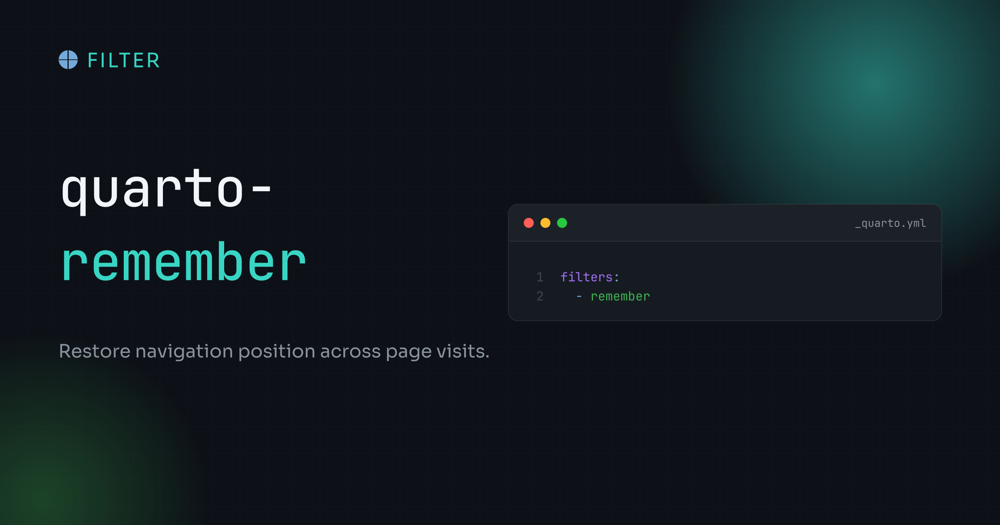
CreatedRemember
An extension for Quarto to save and restore navigation position across page visits for both HTML documents and Reveal.js presentations.
QuartoExtensionbookmarkremembernavigation-tracker -
 Created
CreatedQuarto Extensions Updater (GitHub Action)
A GitHub Action that automatically updates Quarto extensions in your repository, similar to how Dependabot manages dependencies.
QuartoExtensionGitHub ActionQuarto Wizard -
 Created
CreatedCollapse Output
A Quarto extension that provides the ability to collapse code cell outputs in HTML documents using collapsible
<details>elements.QuartoExtensionCollapseDetailsCode Output -
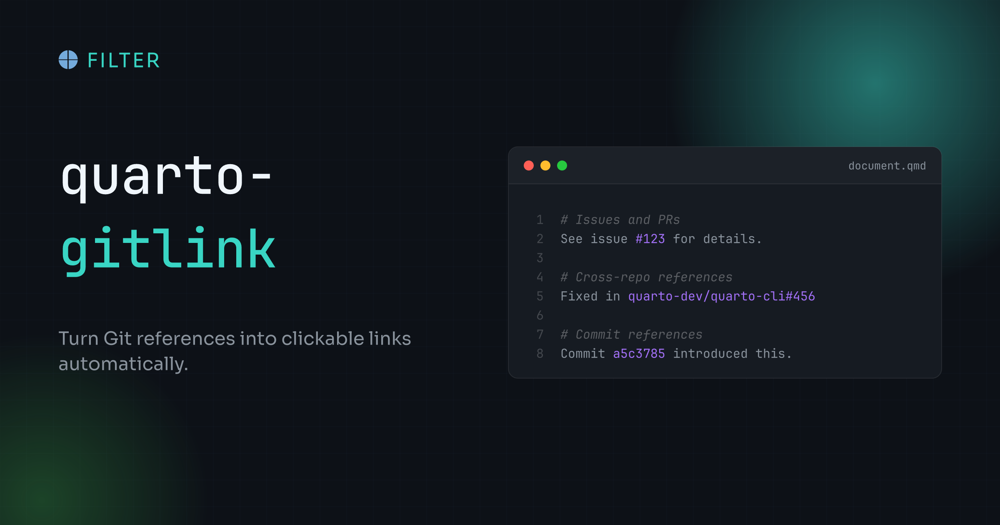
CreatedGit Link
Use Git hosting platforms references (commits, issues, discussions, and pull requests) directly into your Quarto documents.
QuartoExtensionGitAuto-linkShort-linkGitHubGitLabBitbucketGitea -
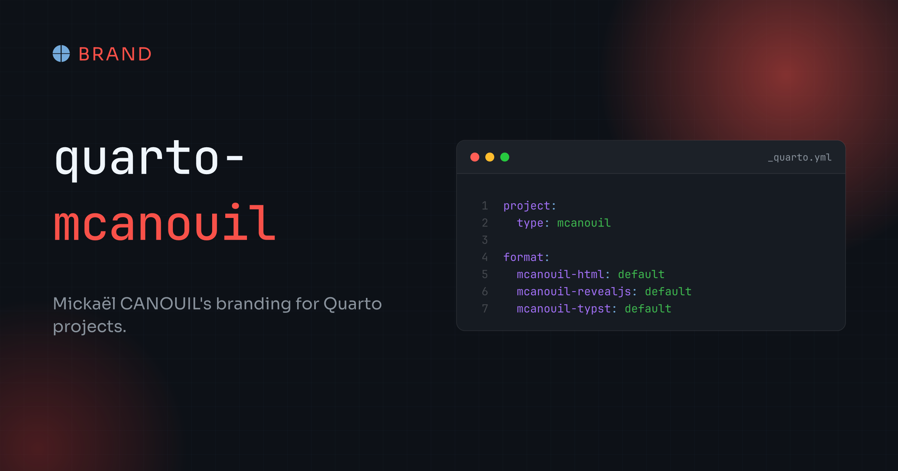
CreatedMickaël CANOUIL
A Quarto extension that provides brand theming and styling for documents (HTML, Typst) and presentations (Reveal.js).
QuartoExtensionBrandTypstHTMLReveal.js -
 Created
CreatedTOC Depth
A Quarto extension that provides fine-grained control over table of contents depth at the header level.
QuartoExtensionTOCDepthTable of Contents -
 Created
CreatedModal
A Quarto extension providing a simple way to create Bootstrap modals in your HTML documents.
QuartoExtensionModalBootstrap -
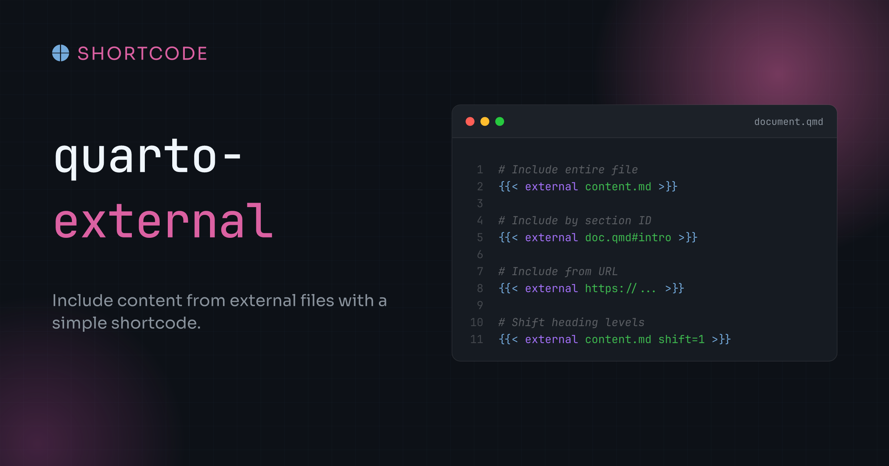
CreatedExternal
Quarto extension to include content or partial content from external file.
QuartoExtensionIncludeExternal -
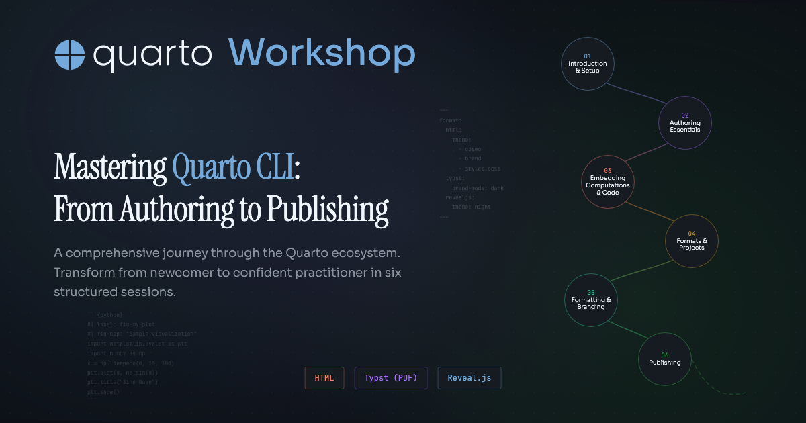
CreatedMastering Quarto CLI: From Authoring to Publishing
A two-day Physalia workshop on the Quarto CLI covering authoring, multi-format publishing, reproducible research, and brand theming, with R, Python, Julia, and Jupyter examples.
WorkshopQuartoTypstRPythonJuliaJupyter -
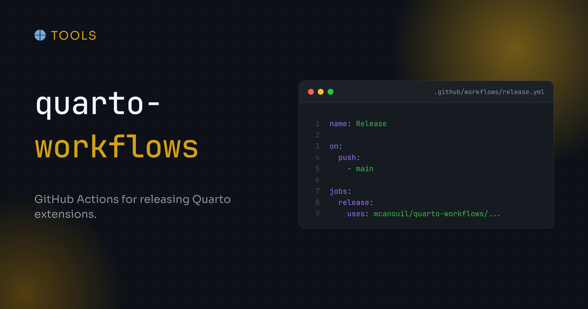
CreatedQuarto Workflows
Reusable GitHub Actions workflows to release Quarto extensions and deploy Reveal.js slides to GitHub Pages.
QuartoGitHub ActionReveal.js -
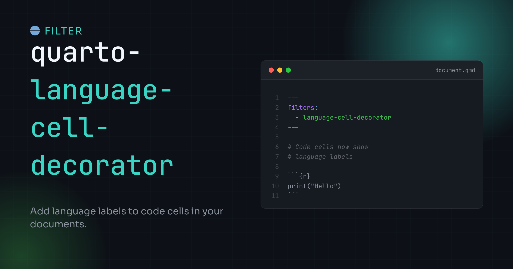
CreatedLanguage Cell Decorator
Quarto extension to add a decorator to the code cells to display the language name.
QuartoExtensionLanguageDecorator -
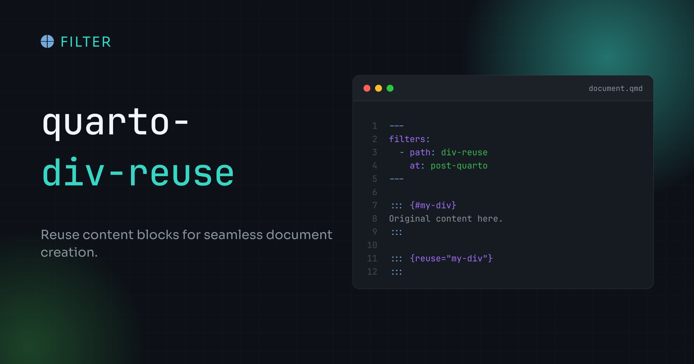
CreatedDiv Reuse
The power of “code/content reuse” for seamless and efficient content creation.
QuartoExtensionCodeReuse -
Created
Quarto Wizard
Quarto Wizard is a Visual Studio Code extension that assists you in managing Quarto projects.
QuartoExtensionQuarto WizardVisual Studio CodePositronfeatured -
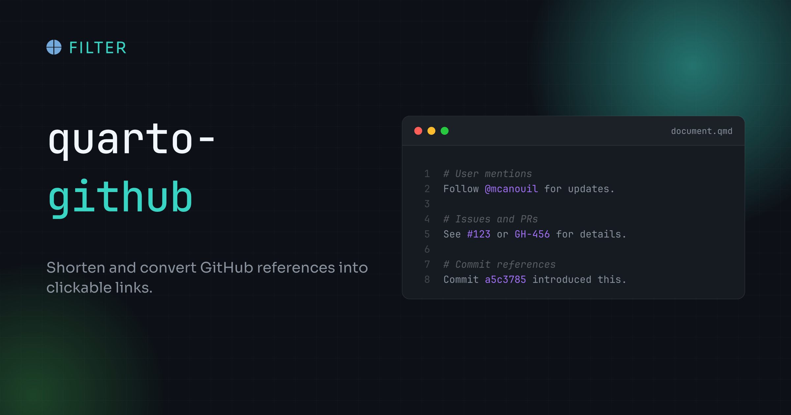
CreatedGitHub
Use GitHub short references (commits, issues, discussions, and pull request) directly into your Quarto documents.
QuartoExtensionHTMLReveal.jsLaTeXTypstDocx -
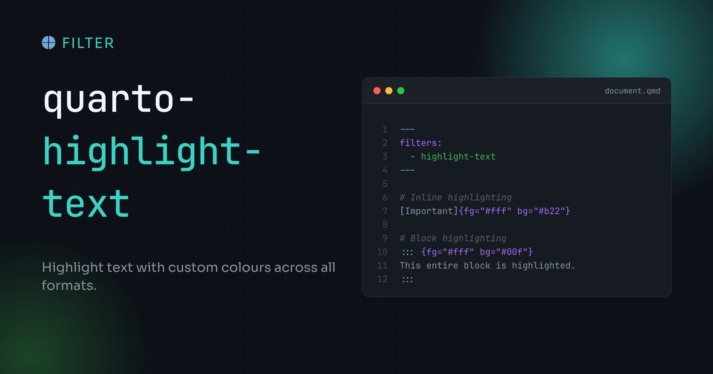
CreatedHighlight-text
Quarto extension that allows to highlight text in a document for various formats: HTML, LaTeX, Typst, Docx, PowerPoint, Reveal.js, and Beamer.
QuartoExtensionHTMLReveal.jsLaTeXTypstDocx -
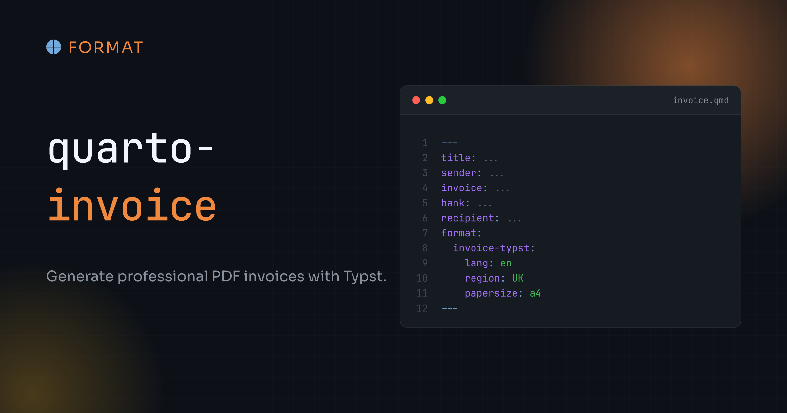
CreatedInvoice (Typst)
Quarto Typst template extension to make invoices.
QuartoExtensionHTMLtemplate -
 Created
CreatedQuarto Codespaces
A Quarto Codespaces / Dev Containers setup for quick online testing of Quarto projects.
QuartoCodespacesDev Containers -
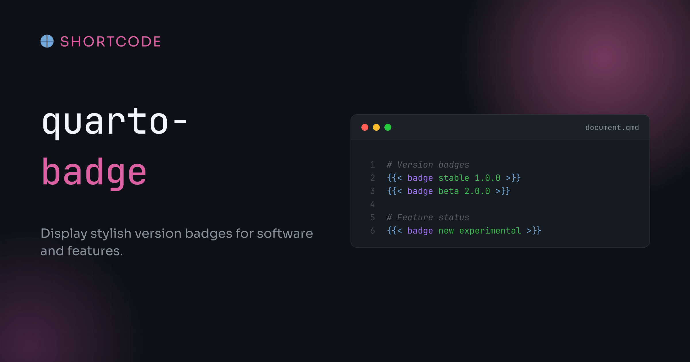
CreatedVersion Badge
Badge is an extension for Quarto to provide a shortcode to display software version or anything as a badge.
QuartoExtensionHTML -
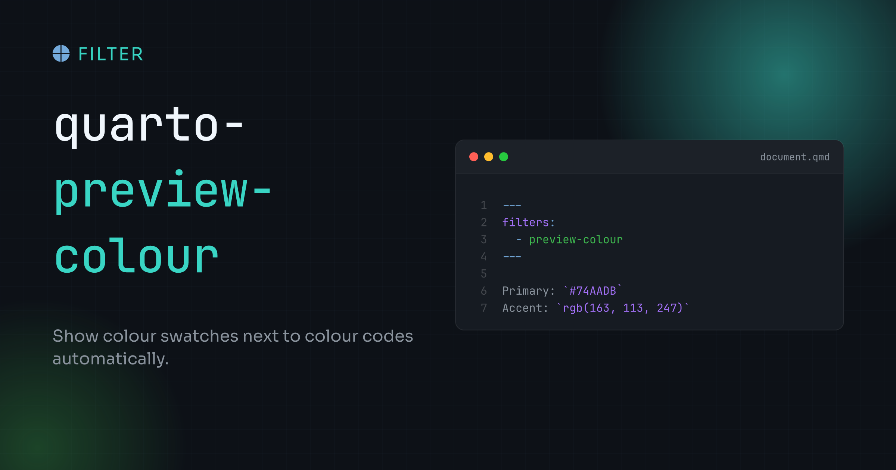
CreatedPreview Colour
A Quarto extension to add preview colour as a coloured symbol next to colour code in HTML, PDF, Typst, Docx, Reveal.js, Beamer, and PowerPoint.
QuartoExtensionHTMLReveal.jsLaTeX -
Created
Quarto Extensions
A listing of
Quarto extensions using GitHub API to retrieve information from the repositories. QuartoExtensionListingQuarto Wizardfeatured -
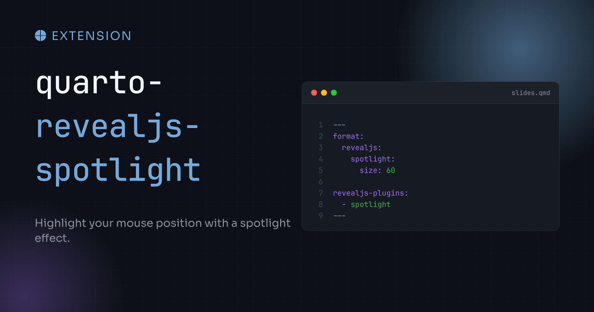
CreatedSpotlight
A Quarto extension for Reveal.js allowing to highlight the current mouse position with a spotlight.
QuartoExtensionReveal.js -
 Created
CreatedLua Env
lua-envis an extension for Quarto to provide access to LUA objects as metadata.QuartoExtension -
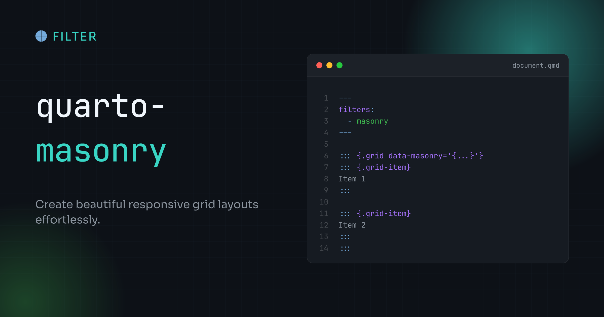
-
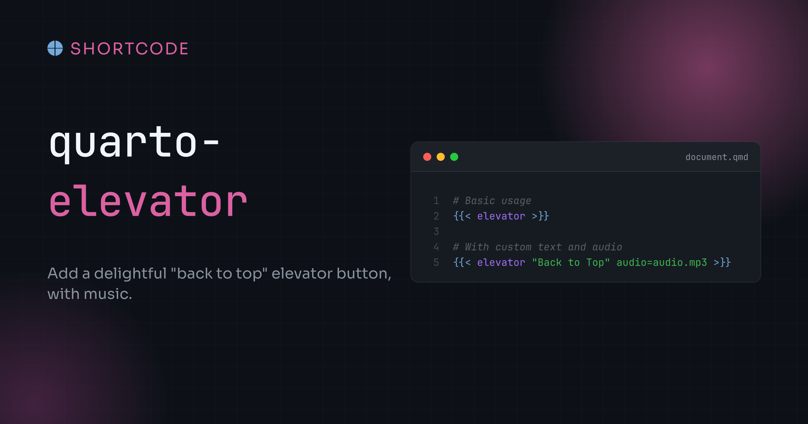
-
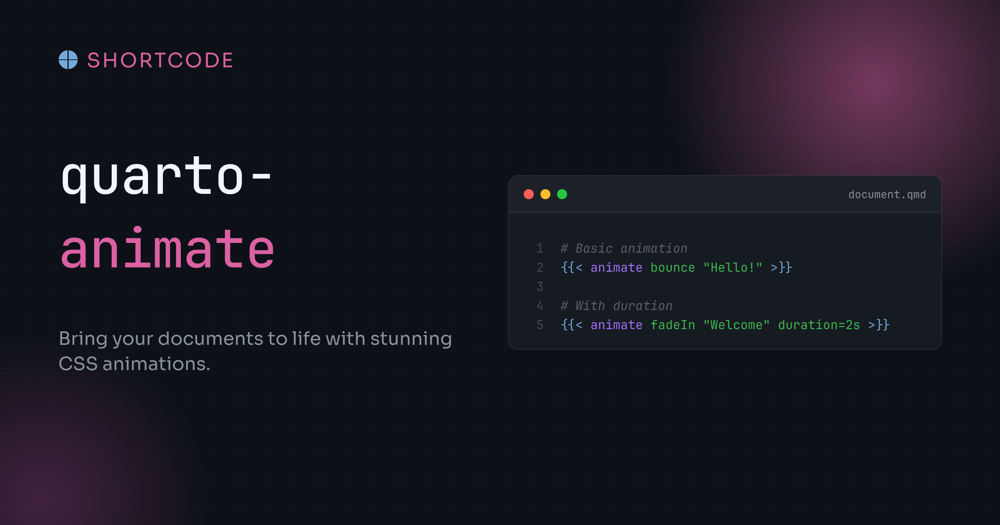
-
 Created
CreatedLetter
A Quarto template that assists you in creating a manuscript using the letter format.
QuartoExtensionFormatLaTeXtemplate -
 Created
CreatedIconify
A Quarto extension providing support to free and open source icons provided by Iconify.
QuartoExtensionHTML -
 Created
CreatedStorybook
A old tale book style Quarto template extension for Reveal.js presentation.
QuartoExtensionFormatReveal.jstemplate -
 Created
CreatedCoeos
A dark grey Quarto template extension for Reveal.js presentation.
QuartoExtensionFormatReveal.jstemplate -
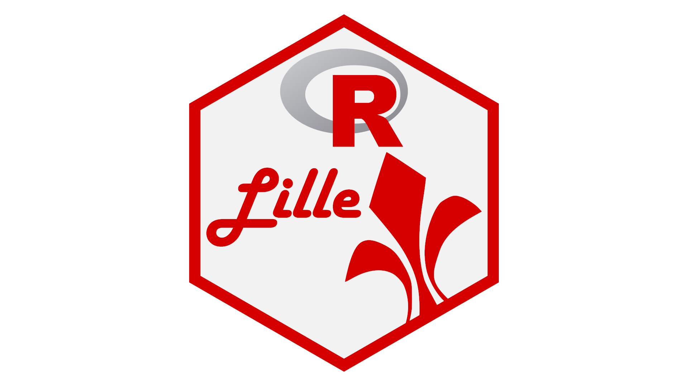
-

-
 Created
CreatedR Advanced Introduction (French)
A 6-hours introduction workshop/course on objects and types in R.
WorkshopCourseRFrench -
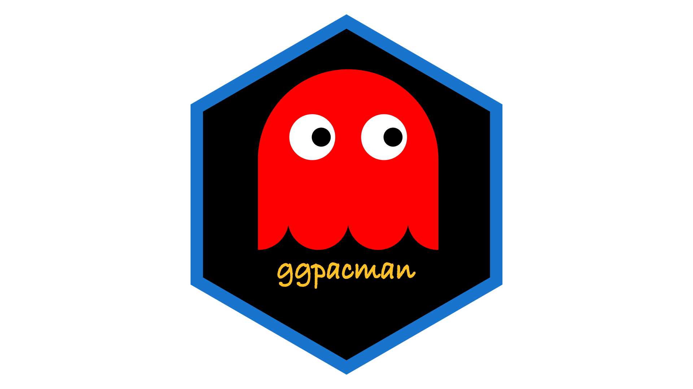
-
 Created
Createdumr1283: UMR 1283 - Project Template
An R package to create the project structure within the Inserm U1283 / CNRS UMR 8199 unit.
R package -
Created
R Lille
R Lille is an R User Group (RUG) located in Lille, France. R Lille is part of the Meetup RUG network sponsored by the R Consortium.
R User Group -

-
 Created
Createdinsane: INsulin Secretion ANalysEr
A user-friendly interface, using Shiny, to analyse glucose-stimulated insulin secretion (GSIS) assays in pancreatic beta cells or islets.
R package -
Created
MiSTr: Mixed effects Score Test
Test for association between a set of SNPS/genes and continuous or binary outcomes by including variant characteristic information and using (weighted) score statistics.
MiSTris an improvement of theMiSToutputs.R package -
 Created
CreatedNACHO: NAnostring quality Control dasHbOard
A shiny-based dashboard to load, visualise and normalise the exported NanoString nCounter data and facilitates the user in performing a quality control.
R package -
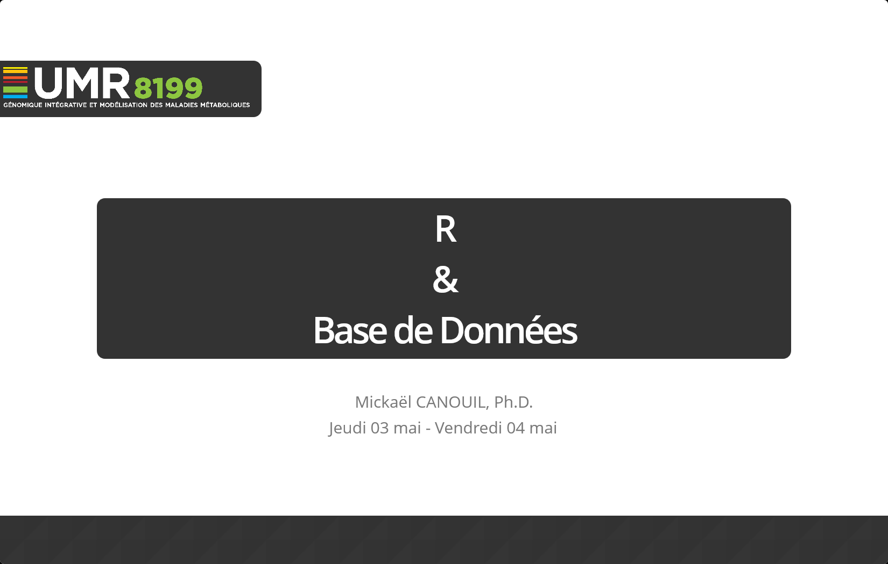
CreatedR and Databases (French)
A two-days workshop on R and databases (+ web scraping).
WorkshopRDatabaseFrench